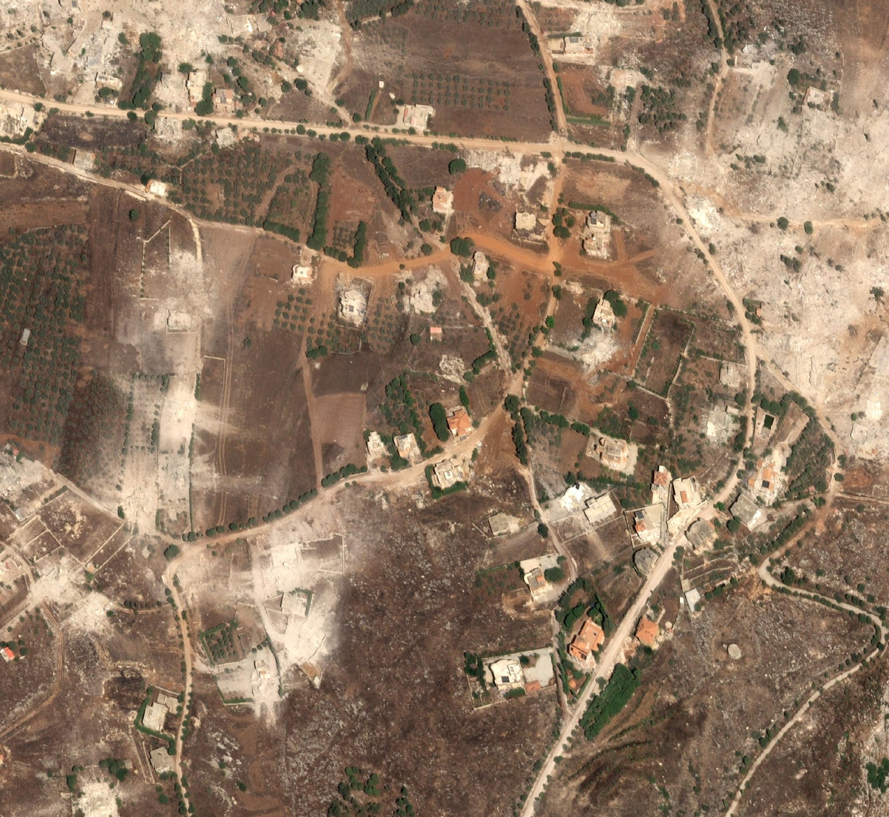

The castle in three dimensions
A 3D model of Beaufort Castle on its cliff above the Litani. Drag to turn it, scroll or pinch to come closer.
The castle from above, July 2023 and September 2026
The castle on 27 July 2023, before the war, and on 3 September 2026, five weeks after the night of 31 July, when very large detonations were reported round it and between Arnoun, Yohmor and Kfar Tebnit. The two pictures were taken from different angles, so the cliff and the walls lean differently: compare the walls and the ground, not the shadows.
Arnoun from above
